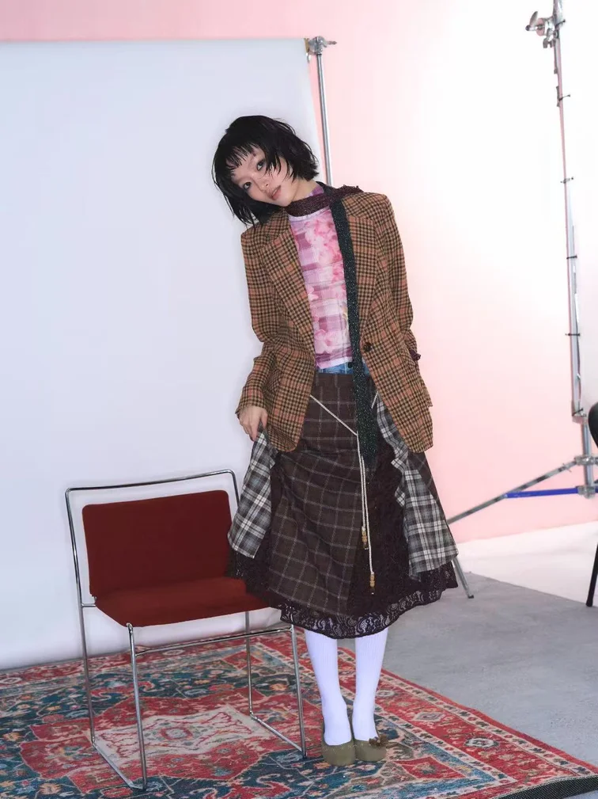
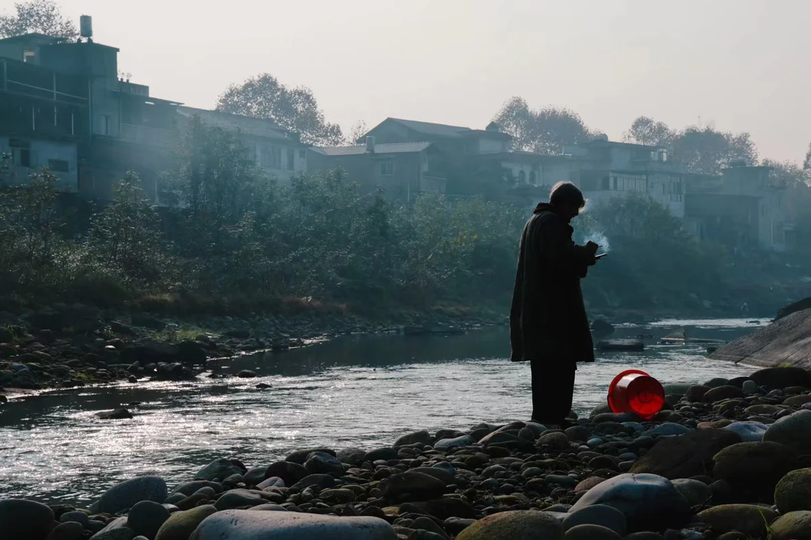
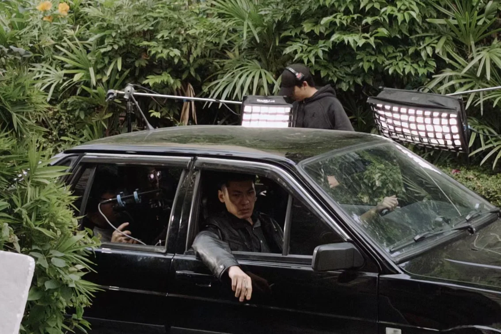

内容策划与新闻采编
- 参与残运会、重要活动等报道跟进，开展桌面研究与选题策划
- 准备采访提纲并参与线下采访调研，独立完成多篇新闻稿件
- 参与珠海电视台新闻剪辑及“珠海特区报”新媒体短视频制作
SELECTED WORK / CASE STUDIES
以真实项目呈现从信息搜集、选题策划、采访拍摄，到内容编辑、视频制作与传播发布的实践过程。每个案例明确呈现实际承担的工作，不以旧版演示文稿作为浏览入口。
01 / NEWS REPORTING & CONVERGED MEDIA
在融媒体中心参与新闻报道与新媒体内容制作，实践覆盖前期信息搜集、选题策划、线下采访、稿件撰写，以及电视新闻剪辑和短视频内容制作。
02 / PHOTOGRAPHY
以人物状态、场景氛围和画面构图为重点，呈现棚拍与外景人像的视觉练习。拍摄过程中关注光线方向、主体关系与画面情绪。

03 / STUDENT SHORT FILM
围绕人物与场景关系进行剧照记录，通过环境光、色彩和景别呈现影片氛围。学生短片项目中承担制片统筹，并参与剧照拍摄。

04 / BEHIND THE SCENES
从前期排程到拍摄现场，协助协调场地、人员与拍摄进度，并记录剧组协作过程。

05 / ORIGINAL IP CONCEPT
茶煲仔拥有独立的角色世界观、视觉语言与商业化延展构想，因此不与摄影、新闻和影像作品混排，而以独立专题网站呈现。